第1番 大木観音 yT
第2番 松野観音 yT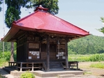
第3番 綾金観音 yT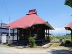
第4番 高吉観音 yT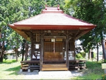
第5番 熱塩観音 yT
第6番 勝観音 yT
第7番 熊倉観音 yT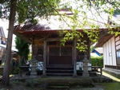
第8番 竹屋観音 yT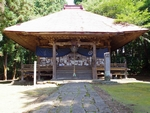
第9番 遠田観音 yT
第10番 勝常観音 yT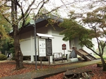
第11番 束原観音 yT
第12番 田村山観音 yT
第13番 舘観音 yT
第14番 下荒井観音 yT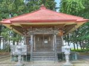
第15番 高瀬観音 yT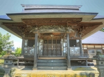
第16番 平澤観音 yT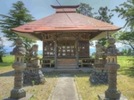
第17番 中ノ明観音 yT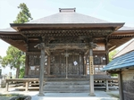
第18番 滝沢観音 yT
第19番 石塚観音 yT
第20番 御山観音 yT
第21番 左下り観音 yT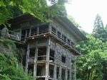
第22番 相川観音 yT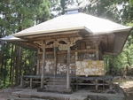
第23番 高倉観音 yT
第24番 関山観音 yT
第25番 領家観音 yT
第26番 富岡観音 yT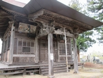
第27番 大岩観音 yT
第28番 高田観音 yT
第29番 雀林観音 yT
第30番 中田観音 yT
第31番 塔寺観音 yT
第32番 青津観音 yT
第33番 御池観音 yT
番外1 浮身観音 yT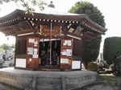
番外2 柳津観音 yT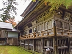
番外3 鳥追観音 yT